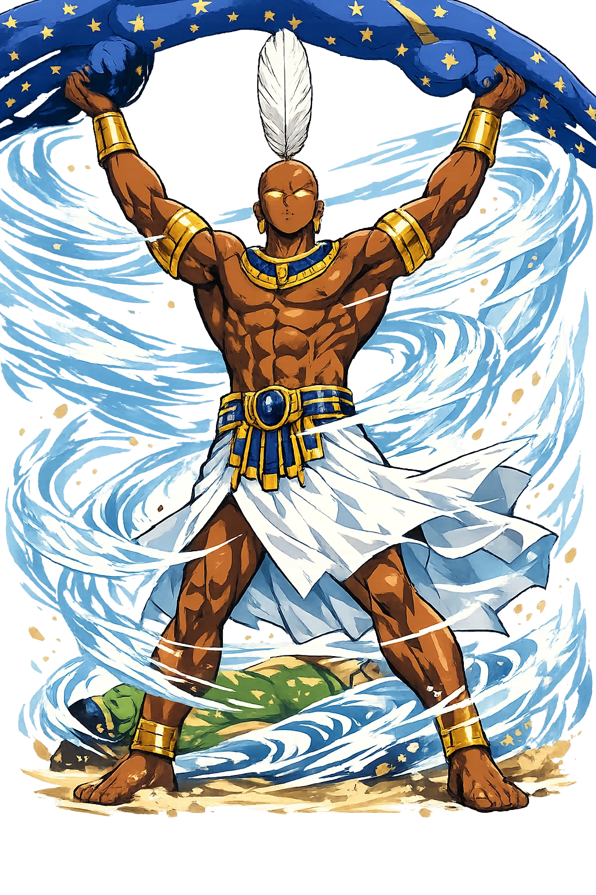
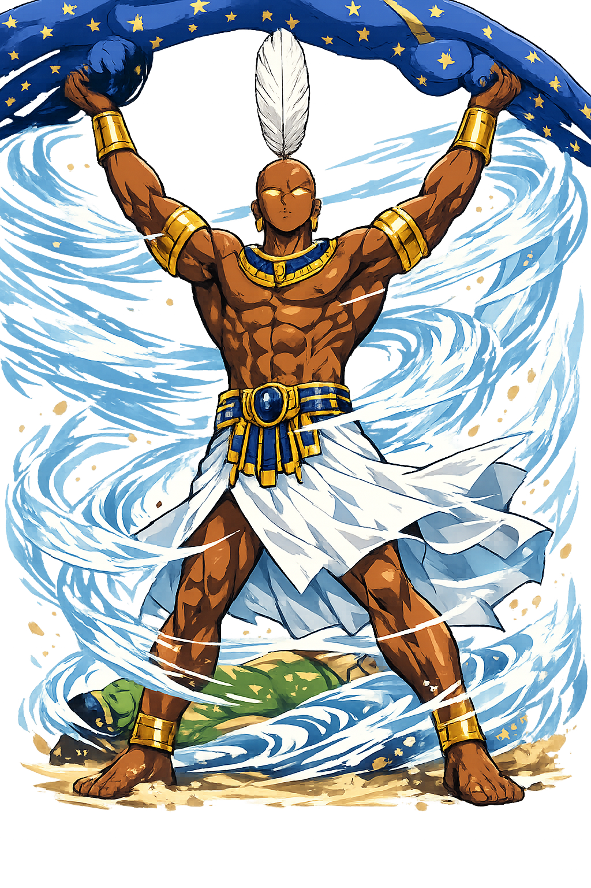

Unicode restoration and ASCII comparison
𓄑
The name in its original Egyptian form. Šw (𓄑) is attested in the source tradition — “Emptiness, he who rises up”. Its original diacritics and script distinctions carry the full phonetic and orthographic weight of the source tradition.
shu
Reduced to plain shu, the name loses everything that made it specific: original diacritics and script distinctions. What remains is an ASCII string that machines can parse but that no longer speaks with its original voice.
Šw
The Unicode restoration recovers what ASCII flattened. Šw restores original diacritics and script distinctions, returning the name to its original written dignity. The domain encodes to Punycode, but the browser displays the truth.
Šw.com → xn--w-4ma.com
The non-ASCII characters in Šw are encoded while the ASCII remains visible. To the DNS, it is Punycode. To humanity, it is Šw.
How Šw travels from ancient script to the modern URL
Egyptian šw; the original vocalisation is unknown. The name is related to šw “dry, emptiness" or to the verb “to rise up".
Air, Wind, Lions
The Unicode restoration Šw uses Egyptological characters registrable in .com; hieroglyphs are outside the .com IDN table.
Owned, ideal, and ASCII forms of Šw
Šw
Restores 𓄑. The live temple domain — šw.com.
shu
Flattens 𓄑. The plain ASCII fallback — what DNS and legacy systems see.
How Šw was spoken
Air · Wind · Lions
Šw is the air that separates earth from sky, the breath that enters nostrils and brings consciousness, the light that makes visibility possible. In Heliopolitan theology he is the first being to emerge from the creator Atum — not by procreation alone, but by breath, spittle, or sneeze. His eternal labour is to hold the sky-goddess Nut above the earth-god Geb so that the space of life can exist between them.
Shu is the atmosphere itself — invisible, life-giving, and inseparable from consciousness.
With arms raised, Shu lifts Nut away from Geb, creating the interval in which all life dwells.
The rays of the sun are called the 'Shu-forms of Re'; Shu makes seeing possible by making space luminous.
Shu sometimes takes leonine form as a fighter and defender, paired with Tefnut's lioness form.
Stories of Šw
Shu's mythology is cosmogony in motion. He is not a hero who goes on quests; he is the first differentiation of the creator, the void that becomes space, the breath that makes the world inhabitable. Without him, Nut and Geb would remain locked together and no life could arise.
In Pyramid Text Utterance 600, Atum stands on the primeval mound and 'sneezes Shu, spits Tefnut'. The wordplay is precise: Shu's name resembles the word for sneeze, Tefnut's for spit. In Coffin Texts Spells 75–80, Atum creates Shu in his mind and exhales him through the nostrils, so that Shu becomes the breath that wakes the creator from lassitude. Whether by sneeze, spittle, or exhalation, Shu is the moment creation becomes conscious.
Shu and Tefnut beget Geb (earth) and Nut (sky). But Geb and Nut are intertwined; there is no room for life between them. Shu places himself in the interval and raises Nut above his head, arching her body into the heavens. Reliefs show him kneeling or standing with upraised arms, the cosmic pillar on which the whole ordered world depends. The Book of the Dead and the Book of Nut return to this image again and again.
A later myth tells how Shu and Tefnut quarrelled, and Tefnut departed to Nubia in the form of a lioness or cat. Shu missed her and sent Thoth, disguised as a baboon, to persuade her back with eloquent speeches. The myth explains the dry wind from the south and the return of moisture, but it also dramatises Shu's dependence on Tefnut: without moisture, dry air is desolation.
Funerary texts promise the deceased, 'I will not thirst because of Shu, I will not hunger because of Tefnut.' Shu supplies the breath that animates the dead in the Duat and supports the ladder by which the justified ascend to the sky. To become an akh is, in part, to receive again the breath that Shu first gave at creation.
Shu is the god of the interval. He is what happens between earth and sky, between inhalation and exhalation, between the word and its meaning. We rarely notice him because he is what we move through; he is the invisible precondition of every visible thing. To become conscious of Shu is to realise that emptiness is not nothing. The space between bodies, between stars, between sounds — these intervals are as real as the things they separate.
Enter Extended Lore